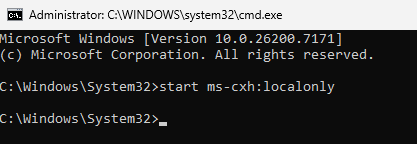
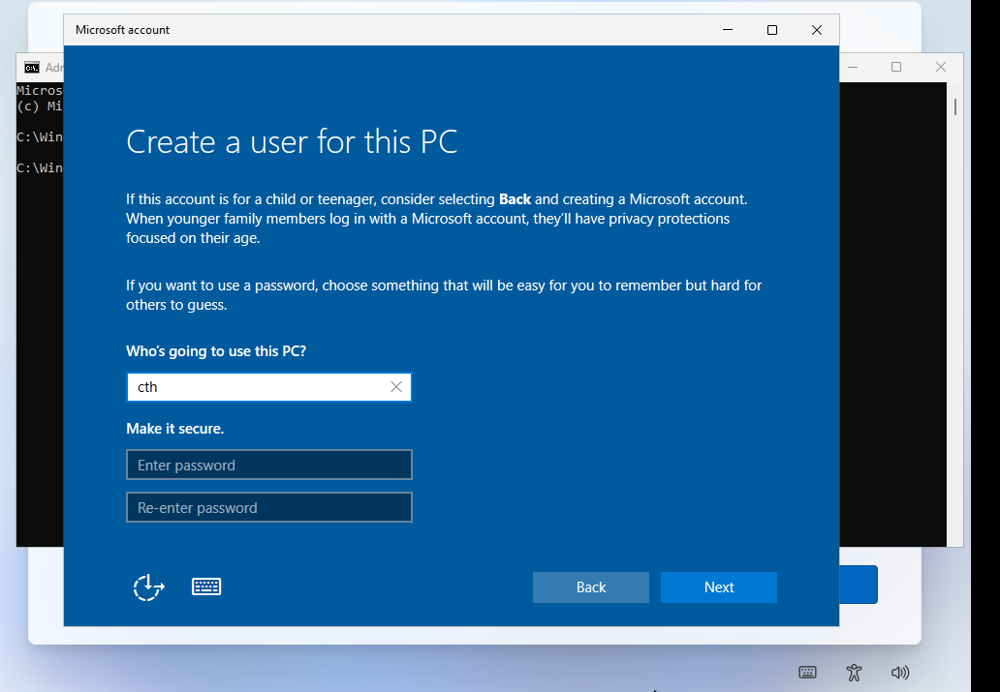
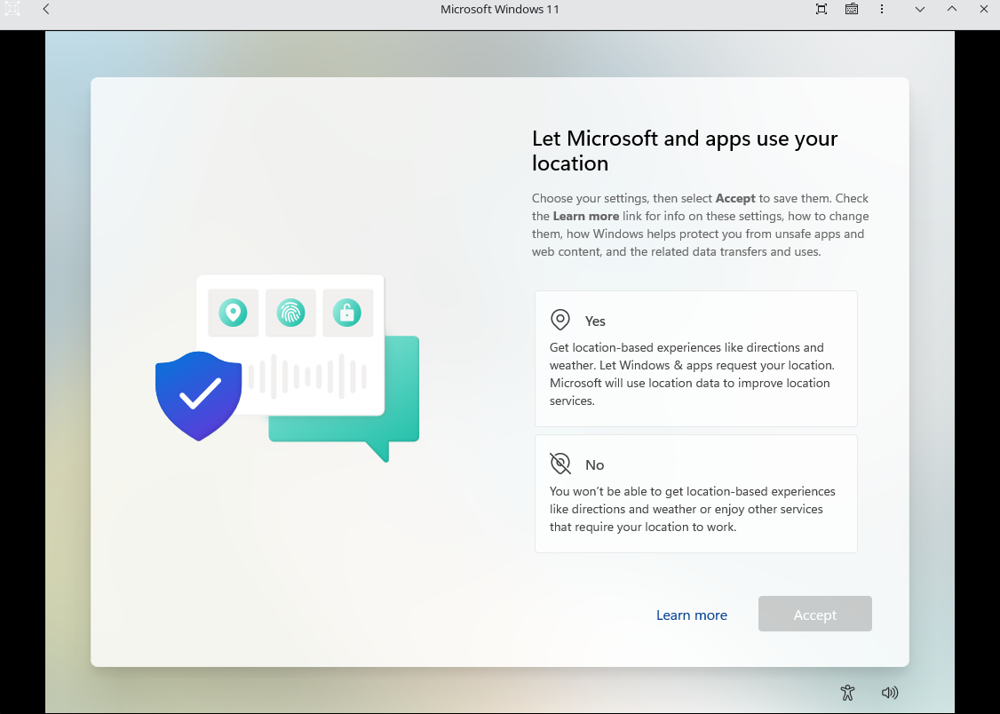

usar uma conta local no Windows é uma opção legítima e documentada pela própria Microsoft, especialmente útil pra ambientes onde vc nao quer a maquina vinculada a uma conta online (conformidade com políticas corporativas, privacidade, máquinas de desenvolvimento, etc.). o problema é que o Windows 11 passou a exigir conta Microsoft durante a instalação, escondendo essa opção.
o método antigo oobe\bypassnro foi desativado pela microsoft. esse tutorial mostra o método atual que funciona.
Como criar a conta local durante a instalação
quando chegar na tela que pede pra fazer login com a conta Microsoft, aperte Shift + F10 para abrir o prompt de comando e digite este comando:
start ms-cxh:localonly
esse comando abre diretamente a tela de criação de conta local, que é uma funcionalidade nativa do Windows. so tava escondida atrás da exigência de login online.
Criar a Conta Local
crie a conta local normalmente: coloque um nome de usuário e uma senha.

Resultado
pronto! o Windows vai carregar normalmente com sua conta local, sem precisar de conta Microsoft.

depois de instalar, rode também o script de debloat do Raphire pra remover o resto do lixo que vem junto com o Windows 11!